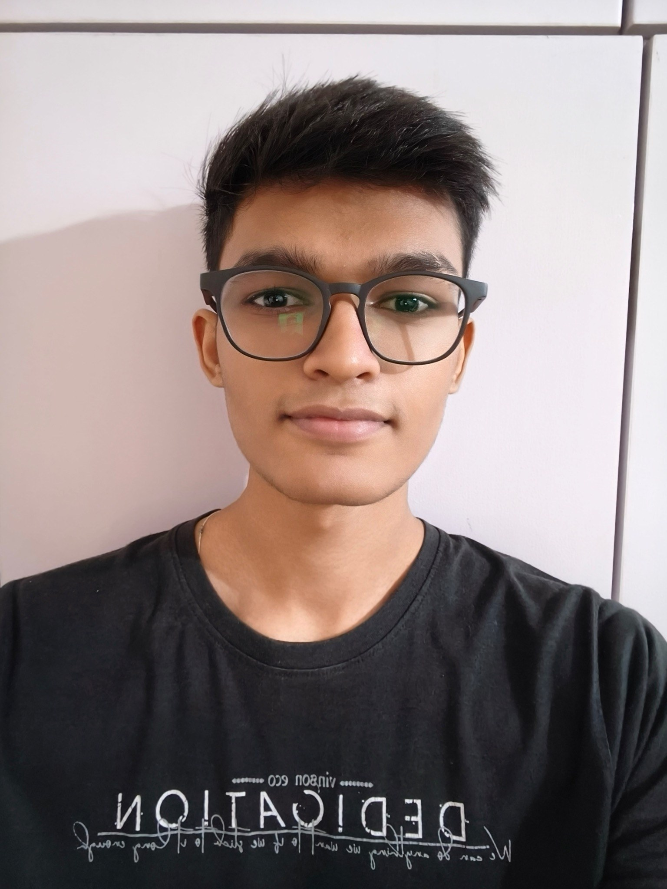

Make some noise.
Summit campaign artwork exploring scale, contrast and youth-culture energy.
Building ideas, making things
and figuring out what's next.

FIG. 01 — THE PERSON BEHIND THE PIXELSI'm a BBA Digital Business & Entrepreneurship student at IIM Bangalore, interested in the space where business thinking meets creative execution.
I like taking a blank page and turning it into something people can see, use or remember — from visual concepts and content to early business ideas. I learn by making, testing and improving.
A selection of visual experiments, campaign concepts and creative work. Each piece started as an idea and became something tangible.
Summit campaign artwork exploring scale, contrast and youth-culture energy.
A merchandise concept built around the platform's playful, internet-native personality.
Motorsport-inspired poster study using dramatic lighting and a limited palette.
Editorial cover concept with a bold typographic hierarchy.
A graphic-led T-shirt concept about ambition, money and momentum.
A travel-poster experiment inspired by the feeling of discovering somewhere new.
A cinematic poster study exploring strong composition and high-impact type.
Through freelance creative work, graphic design and video content on Under 25, I independently earned approximately.
BBA in Digital Business & Entrepreneurship. Exploring how businesses are built, scaled and made relevant.
Social Media & Content Creation
Contributed to the brand's digital presence through creative content work at Zolon Architectural Hardware Pvt. Ltd.
Created visual content, design concepts and video projects through Under 25, earning approximately ₹45,000 over one year.
Completed a three-month Computer Concepts course, building a foundation in everyday digital tools.
Badminton, visual storytelling, new places, films and the long-term ambition to build something of my own.
Three-month course at Sardar Patel Institute of Computer Education.
Participation in a value education contest based on the Gita.
A little ambition.
A lot of curiosity.
I'm interested in meeting people who build, experiment, challenge assumptions and care about the details.
SAY HELLO ↗